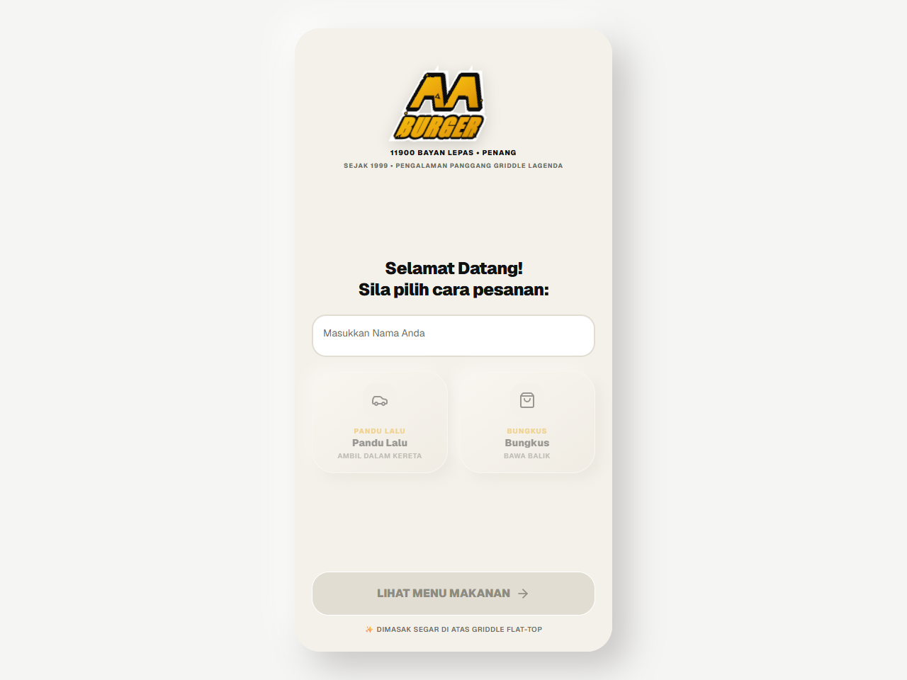

01BusinesswebsitesCompany sites / Enquiries● ● ● fuzzfloor.commake a good first click ↗Help customers understand your business and take the next step, from their first visit to a WhatsApp enquiry.Explore website plans ↗
02BusinesssystemsDashboards / Internal toolsMZE WORKER SYSTEM / DEMOless spreadsheet jugglingBring your team's day-to-day processes into a system that fits how you work.Explore the system demo ↗
03Digital products& experiencesCustomer tools / Interactive demosmade to be used ↖Turn a useful idea into something people can use, explore and interact with.Explore AA Burger Kiosk ↗
04WebsitecareUpdates / MaintenanceCARE / CHECKLIST✓ Content updates✓ Maintenance✓ Small changeskeep it running nicelyKeep your site current as your business changes, with a managed plan or updates when you need them.View support options ↗